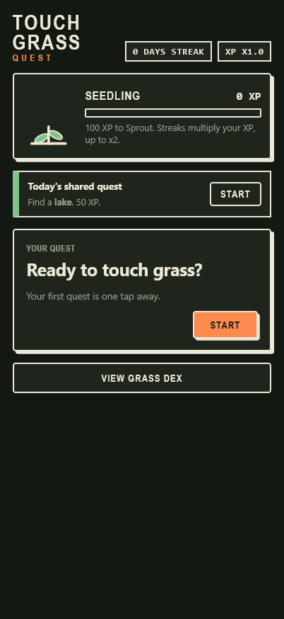
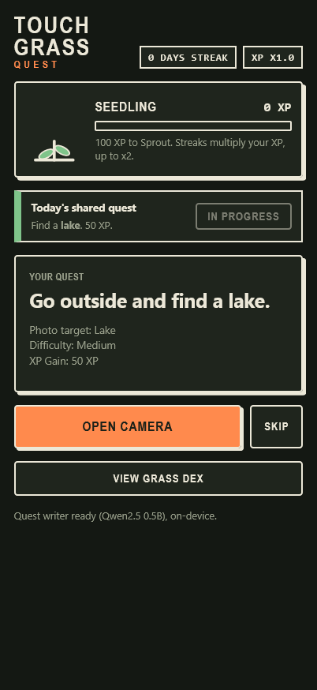
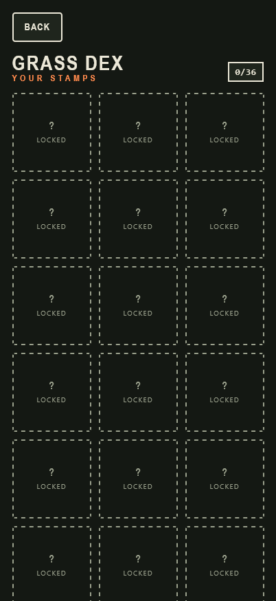

Touch Grass Quest
A scavenger-hunt game that sends you outside. Get daily outdoor quests, photograph them
with the live camera, and an on-device AI checks the find. Finds earn XP that grows a plant and fill your Grass
Dex. Built for the Hacktoberfest Week 1: Touch Grass challenge.

Project Details / Background
I wanted an entry for the Hacktoberfest open-source AI challenge that actually gets
people off the couch. Each day the app deals five quests (2 easy, 2 medium, 1 hard) plus one shared quest
everyone gets on the same day. You open the live camera, take a photo, and CLIP compares it against the target
plus a set of negatives. A 3-minute cooldown after each check stops couch farming.
Tech: Single-file vanilla HTML/CSS/JS PWA (`index.html` + `styles.css` +
`sw.js`, no backend, no account). Photo check is `Xenova/clip-vit-base-patch32` zero-shot classification,
quest text is Gemma 3 270M falling back to Qwen2.5 0.5B then templates — all via transformers.js from
jsDelivr, model IDs as constants at the top of the script. XP is 10/20/40 by difficulty plus 50 for the shared
quest, streak multiplier x1.0–x2.0, away bonus up to +20. Plant grows at 0/100/400/1000/2500 XP and droops
after 3 days away. Progress in `localStorage` under `tgq`, service worker caches the app for offline use after
first load.
What I learned: Small on-device models need guardrails — the quest
writer drifts off-topic so its output is validated with a target-mention check and falls back to templates.
Framing matters a lot for CLIP: same tree too far or too close flips the result. Honor-system limits are real
too — you can still photograph a screen, and real anti-cheat would need a server.
Next: Better framing hints before the snap, per-quest confidence tuning,
and a shareable Grass Dex card.
Features

